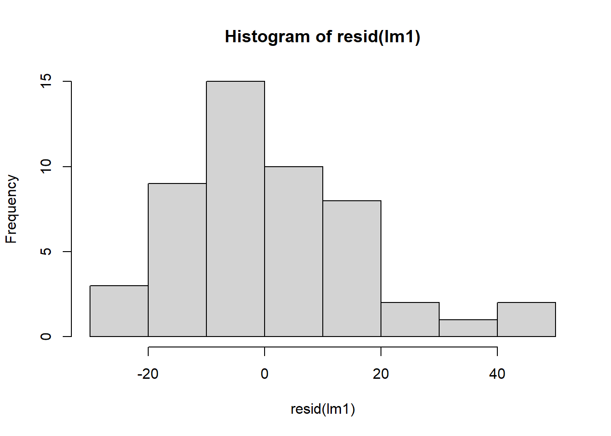
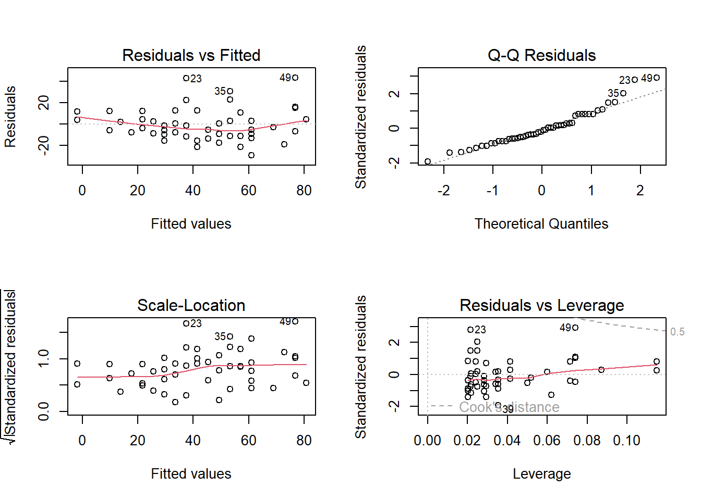
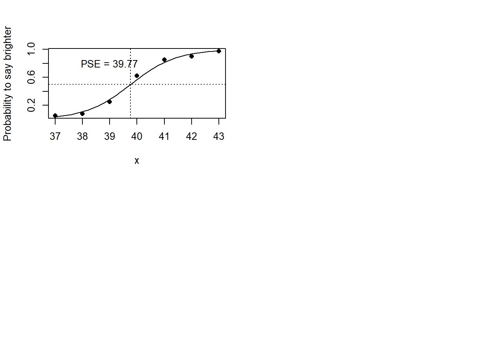

Chapter 2 Generalized linear models
2.2 Exercises
Code
#--------------- (1) Exercise 1 ---------------
x <- rnorm(100, mean=1)
y <- rnorm(100, mean=2)
dat <- data.frame(id=1:200, group=rep(c("x","y"), each=100), score=c(x, y))
rm(x,y)
t1 <- t.test(score ~ group, dat, var.equal=TRUE)
lm1 <- lm(score ~ group, dat)
aov1 <- aov(score ~ group, dat)
(stat <- list(
coef=matrix(c(t1$estimate, lm1$coef, aov1$coef), 2, 3,
dimnames=list(NULL, c("ttest", "lm", "aov"))),
statistics=matrix(c(t=t1$statistic^2, Flm=summary(lm1)$fstatistic[1],
Faov=unlist(summary(aov1))[7]), 1, 3, dimnames=list(NULL,
c("t","Flm","Faov"))))
)## $coef
## ttest lm aov
## [1,] 1.105390 1.1053896 1.1053896
## [2,] 1.991643 0.8862539 0.8862539
##
## $statistics
## t Flm Faov
## [1,] 44.86576 44.86576 44.86576Code
#--------------- (2) Exercise 2 ---------------
data(cars)
lm1 <- lm(dist ~ speed, cars)
summary(lm1)##
## Call:
## lm(formula = dist ~ speed, data = cars)
##
## Residuals:
## Min 1Q Median 3Q Max
## -29.069 -9.525 -2.272 9.215 43.201
##
## Coefficients:
## Estimate Std. Error t value Pr(>|t|)
## (Intercept) -17.5791 6.7584 -2.601 0.0123 *
## speed 3.9324 0.4155 9.464 1.49e-12 ***
## ---
## Signif. codes: 0 '***' 0.001 '**' 0.01 '*' 0.05 '.' 0.1 ' ' 1
##
## Residual standard error: 15.38 on 48 degrees of freedom
## Multiple R-squared: 0.6511, Adjusted R-squared: 0.6438
## F-statistic: 89.57 on 1 and 48 DF, p-value: 1.49e-12Code
hist(resid(lm1))
Code
par(mfrow=c(2,2))
plot(lm1)
Code
lm2 <- lm(dist ~ speed + I(speed^2), cars)
anova(lm1, lm2)## Analysis of Variance Table
##
## Model 1: dist ~ speed
## Model 2: dist ~ speed + I(speed^2)
## Res.Df RSS Df Sum of Sq F Pr(>F)
## 1 48 11354
## 2 47 10825 1 528.81 2.296 0.1364Code
#--------------- (3) Exercise 3 ---------------
dat <- data.frame(x = 37:43,
y = c(2, 3, 10, 25, 34, 36, 39),
n = 40)
glm1 <- glm(cbind(y, n-y) ~ x, binomial, dat)
a <- 1 / coef(glm1)[2]
c <- -coef(glm1)[1]/coef(glm1)[2]
newx <- seq(37, 43, .1)
pre <- predict(glm1, data.frame(x=newx), type="response")
plot(y/n ~ x, dat, pch=16, ylab="Probability to say brighter")
lines(pre ~ newx, dat)
abline(v=c, h=.5, lty=3)
text(39, .8, paste("PSE =", round(c,2)))
# goodness-of-fit test
glms <- glm(cbind(y, n-y) ~ factor(x), binomial, dat)
anova(glm1, glms, test="Chisq")## Analysis of Deviance Table
##
## Model 1: cbind(y, n - y) ~ x
## Model 2: cbind(y, n - y) ~ factor(x)
## Resid. Df Resid. Dev Df Deviance Pr(>Chi)
## 1 5 2.6037
## 2 0 0.0000 5 2.6037 0.7608Code
# overdispersion
summary(glm(cbind(y, n-y) ~ x, quasibinomial, dat))##
## Call:
## glm(formula = cbind(y, n - y) ~ x, family = quasibinomial, data = dat)
##
## Coefficients:
## Estimate Std. Error t value Pr(>|t|)
## (Intercept) -47.80797 3.87192 -12.35 6.17e-05 ***
## x 1.20216 0.09724 12.36 6.13e-05 ***
## ---
## Signif. codes: 0 '***' 0.001 '**' 0.01 '*' 0.05 '.' 0.1 ' ' 1
##
## (Dispersion parameter for quasibinomial family taken to be 0.537067)
##
## Null deviance: 182.7247 on 6 degrees of freedom
## Residual deviance: 2.6037 on 5 degrees of freedom
## AIC: NA
##
## Number of Fisher Scoring iterations: 4